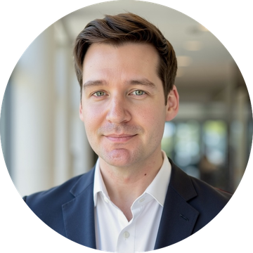

Generative AI for Work & Research
A running record of what I build in this course, one submission per week.

- NameRyan Arias Delafosse
- RoleSenior Data Scientist, World Bank
- ResearchPhD candidate, Institute of Global Health, University of Geneva
01About me
Data scientist with over 10 years of experience building decision-support data systems across the World Bank, UN agencies, and government partners. I lead data work end to end, from field data collection and pipeline engineering to analytics and executive-ready products used by senior decision-makers, mostly in humanitarian, development, and fragile contexts.
My PhD at the University of Geneva (Biomedical Sciences, Global Health track) looks at how open geospatial data can be used to model climate-induced migration and its consequences for public health.
Experience
- World BankSenior Data Scientist; previously Data Scientist2025 to now
- World Health OrganizationGeospatial Data Scientist2023 to 2025
- UNHCRGlobal Information Management Officer2021 to 2023
- UN OCHAInformation Management Officer2020 to 2021
- Virgin Islands Recovery and Development AgencyInterim Head of Monitoring and Evaluation2018 to 2020
- ACLED, IOM, IFRC, IDMC, REACHResearch, GIS, and data roles across the Middle East2014 to 2018
Education
- University of GenevaPhD, Biomedical Sciences, Global Health track2024 to now
- ESILV ParisMEng, Computer Engineering: Machine Learning & AI2019 to 2021
- King's College LondonMA, War Studies: Conflict, Security, and Development2015 to 2016
- Texas A&M UniversityBA, International Studies: Middle East Studies2007 to 2011
Selected publication
- Hospital Functionality in the Gaza StripConflict and Health (co-author)2026
02About the course
Generative AI for Work & Research is an 8-week live cohort course from The GRAPH Courses, based at the University of Geneva. It covers no-code AI tools for responsible task automation, through weekly prework, live workshops, and hands-on practice.
- M1Websites, documents & presentations
- M2AI-automated data analysis
- M3GenAI for text processing & research
- M4Custom GPTs and chatbots
- M5AI for task automation
- M6GenAI for communication & outreach
- M7Capstone project & showcase
03Weekly submissions
- W01Portfolio websiteThis page, built with Claude Code and hosted on GitHub PagesLive
- W02Automated data analysis: poverty and child mortalityR Markdown report on Gapminder 2020 data, built with Claude CodeLive
- W03To be addedSoon
- W04To be addedSoon
- W05To be addedSoon
- W06To be addedSoon
- W07To be addedSoon
- W08To be addedSoon